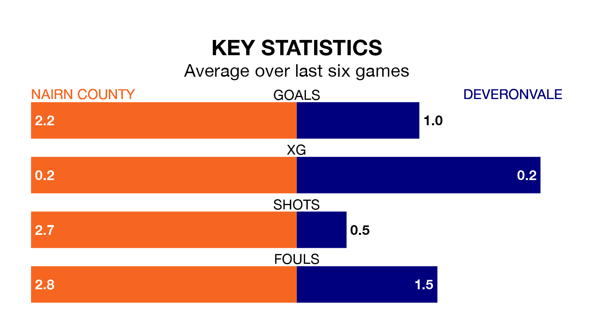

Deveronvale make the journey to Station Park to play Nairn County on Saturday looking to pick up points to end their three-game losing streak.
Deveronvale's struggles have left them with just four points from their last six Highland Football League matches, while their opponents have earned nine from a possible 18.
In the last 10 years, Nairn and Deveronvale have played each other on 13 occasions. Nairn won nine of them, Deveronvale two, and they drew twice.
On average, Nairn scored 3.2 goals and Deveronvale 1.3 in those matches.
Their last meeting was on October 7, when Nairn won 3-1 away.
Deveronvale are 15th in the table after 23 games, of which they have won three and drawn six, earning 15 points.
Nairn are nine places ahead of the away team in sixth, with 13 wins and one draw putting them on 40 points.
With 26 goals in 23 games so far this season, Deveronvale are scoring at below the league average rate with 1.1 goals per game. And they are conceding more than average, letting in 59 goals at a rate of 2.6 per game.
County, meanwhile, are above average scorers, with 2.0 goals per game, compared to a league average of 1.9. They have conceded 1.7 goals per game.
Nairn's last match was on Wednesday, a 4-2 loss against Huntly.
Deveronvale lost 4-1 against Banks O' Dee last time out, on February 10.
Updated: 12:06 (UTC), 15/02/24